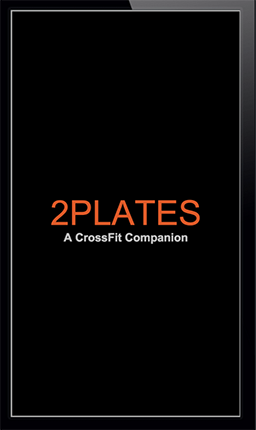
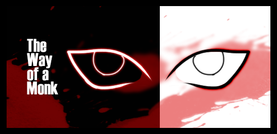
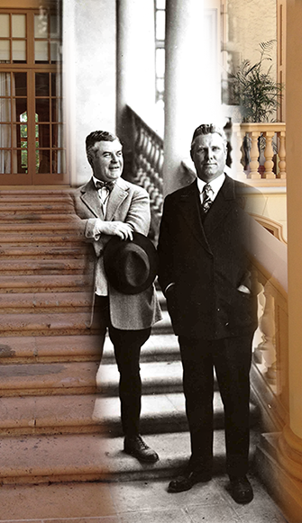
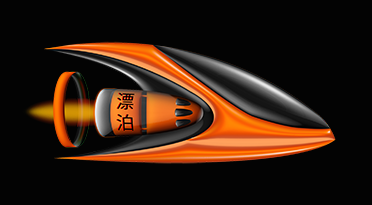
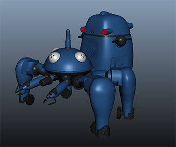

I am currently a graduate student at the University of Miami pursuing my graduate degree in Interactive Media.
I like to build stuff with a computer. My background is in Audio Engineering, 3D modeling, UX and Game Design. I also have some experience with HTML / CSS, Adobe (Illustrator, Photoshop, After Effects), Autodesk Software (Maya), and Wire Framing. Sometimes I mess around with Arduinos as well.
A WWF Project
We helped the WWF with a website to help them explain the importance of FSC products.

A Crossfit Companion App
This is a conceptual wireframe for a Crossfit Fitness mobile app.

The Way of a Monk
Explore the process of making a 2D Sidescroller game for my Capstone project.

A Look into the Past
I came up with this concept for an app in my design class. It's a cool concept for a layering and masquing app.

Ether Flux
A 2D Sidescrolling Shooter made in Xcode

Tachikoma Infographic & Animation
A 3D Model I made of a Tachikoma from the Ghost in the Shell universe.
A WWF Colab
One of the most interest projects that I had an opportunity to work on was for the World Wildlife Fund. The WWF is one of the leading conservation groups in the world. In conjunction with the University of Miami, we set out to build a website which would help millenias learn about the importance of WFC Products.
2Plates - A CrossFit Companion App
This app would have many features that are currently available on respective app markets. However, you would need 2-3 apps to have all the functionalities of this one app. Take a look inside at some of the features!
One of my biggest passions is game design, and I can't express how exciting it was to be able to work on this project for a year and a half. Come check out some of the work that went into creating this exciting 2D Sidescrolling platformer.
This is an interesting conept for an app that I came up with in my first design class. By overlaying new pictures on top of old history photos, you can create some cool stuff!
Ether Flux - A game created in Xcode
For my mobile application development class with Professor Kent, I decided that I wanted to make a game. This would actually be my first forray into gamde design. I had the help of the great indie devs over at PixelNest, and was able to customize a game that fit the style I was going for - Sci Fi!
The funnest classes I had during my grad school were the 3D Modeling ones. This first one in particular came out really well. We had to make a 3D Model, make it into an infographic, and then create an animation that would showcase the model in action.